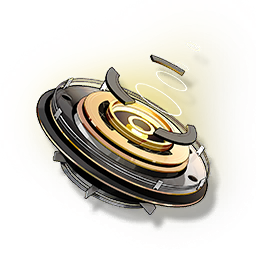

Podcast Experience

Experience obtained from completing Pioneer Podcast tasks can be used to upgrade the Pioneer Podcast level.
Each completion of a Pioneer Podcast task is an accumulation of energy. When the accumulated energy reaches a critical point, it can bring substantial benefits.